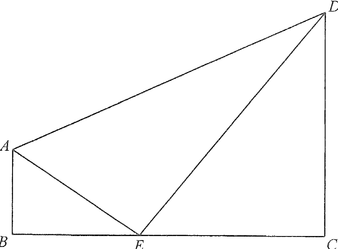

Trapezium $ABCD$ with $AB // DC$, $\angle ABC=90^\circ$ and $\angle AED=90^\circ$
Figure 2 (interactive)
AB // DC (bases)AE (right angle at E)DE / triangle ADEpoint E on BCright angles
Question
[2018 #13]
In Figure 2, $ABCD$ is a trapezium with $AB // DC$ and $\angle ABC=90^\circ$.
$E$ is a point lying on $BC$ such that $\angle AED=90^\circ$.
(a) Prove that $\triangle ABE\sim\triangle ECD$. [2 marks]
(b) It is given that $AB=15\text{ cm}$, $AE=25\text{ cm}$ and $CE=36\text{ cm}$.
(i) Find the length of $CD$. (ii) Find the area of $\triangle ADE$. (iii) Is there a point $F$ lying on $AD$ such that the distance between $E$ and $F$ is less than $23\text{ cm}$? Explain your answer. [6 marks]

Figure (original exam diagram)
Solution
Step 1 · (a) Angle chase
AAA Similarity Test\(\angle A=\angle A^{\prime},\ \angle B=\angle B^{\prime}\ \Longrightarrow\ \triangle ABC\sim\triangle A^{\prime}B^{\prime}C^{\prime}\)The angle chase gives \(\angle ABE=\angle DCE\) and \(\angle BAE=\angle CED\), so the triangles are similar.
Given $\angle ABC=90^\circ$, and $AB // DC$ (interior angles, $AB // DC$):
$$\angle DCE=180^\circ-\angle ABC=90^\circ$$
So $\angle ABE=\angle DCE$. In $\triangle ABE$, by the angle sum of a triangle:
Corresponding Sides of Similar Triangles\(\dfrac{CD}{BE}=\dfrac{CE}{AB}\)Corresponding sides of \(\triangle ABE\) and \(\triangle ECD\) are in the same ratio.
From the similarity in (a), corresponding sides are proportional:
Since $23.077>23$, every point $F$ on $AD$ satisfies $EF\ge 23.077\text{ cm}>23\text{ cm}$.
Key idea: the closest point of a segment to a fixed point is given by the perpendicular foot (if it lies within the segment). Here $EF_{\min}=300/13$ cm, which already exceeds $23$ cm.
Answers:
(a) $\triangle ABE\sim\triangle ECD$ (AAA).
(b)(i) $CD=48\text{ cm}$ · (ii) Area of $\triangle ADE=750\text{ cm}^2$ ·
(iii) No. The shortest distance from $E$ to $AD$ is $\dfrac{300}{13}\approx23.08\text{ cm}>23\text{ cm}$, so no such point $F$ exists.
PRACTICESimilar question — try it yourself
Question. In the figure, \(ABCD\) is a trapezium with \(AB // DC\) and \(\angle ABC=90^{\circ}\). \(E\) lies on \(BC\) such that \(\angle AED=90^{\circ}\). Given \(AB=15\ \text{cm}\), \(AE=25\ \text{cm}\) and \(CE=24\ \text{cm}\): (a) prove that \(\triangle ABE\sim\triangle ECD\); (b) find \(CD\); (c) find the area of \(\triangle ADE\).
Show the worked solution
Step 1. (a) \(\angle ABE=90^{\circ}\) and, since \(AB // DC\), \(\angle DCE=180^{\circ}-90^{\circ}=90^{\circ}\). Also \(\angle BAE=90^{\circ}-\angle AEB=\angle CED\) (using \(\angle AED=90^{\circ}\) and \(B,E,C\) collinear), so \(\triangle ABE\sim\triangle ECD\) (AAA).
Step 2. (b) In right-angled \(\triangle ABE\): \(BE=\sqrt{25^{2}-15^{2}}=\sqrt{400}=20\ \text{cm}\).
Step 3. (b) From the similarity \(\dfrac{CD}{BE}=\dfrac{CE}{AB}\), so \(CD=\dfrac{24\times20}{15}=32\ \text{cm}\).
Step 4. (c) \(BC=BE+CE=20+24=44\ \text{cm}\), so the trapezium has area \(\tfrac{1}{2}(15+32)(44)=1034\ \text{cm}^{2}\).
Step 5. (c) Subtract the two right triangles: \(1034-\tfrac{1}{2}(15)(20)-\tfrac{1}{2}(32)(24)=1034-150-384=500\ \text{cm}^{2}\).